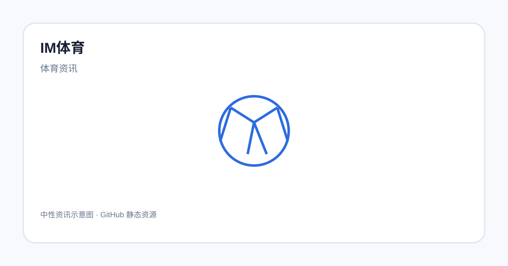

IM体育深度解析：热门赛事与项目介绍

本文围绕“IM体育”这一关键词进行中性信息整理，内容主要用于帮助读者理解相关主题和常见表达。
IM体育的基本概念
IM体育是本专题的核心关键词。本文从中性信息整理的角度介绍相关主题，帮助读者建立清晰的阅读框架。本文不对具体服务、结果或收益作保证。
常见内容如何理解
阅读IM体育相关资料时，可以先区分主题名称、项目或玩法名称、规则说明以及具体服务信息。遇到具体规则时，应优先核对当时可验证的原始资料。
新手阅读时可以关注什么
对于新手而言，先理解基础术语通常比直接寻找复杂技巧更重要。可以关注内容分类、规则说明、时间信息以及风险提示等基础信息。
如何整理相关资料
如果需要比较不同内容，可以使用统一维度，例如信息完整程度、规则透明度、资料更新时间和表达是否清晰。这样的方式更适合长期记录。
阅读时需要注意什么？
网络上的名称、页面和服务信息可能发生变化。涉及具体服务、资格、规则或法律要求时，应以当时可核验的官方资料为准，并结合所在地相关规定进行判断。
总结
通过基础概念、内容分类和信息核验三个步骤，可以更有条理地阅读IM体育相关资料。本文不提供下注、充值、收益承诺或规避监管的方法。
提示：本文为一般性资讯整理，不构成投资、博彩、法律或其他专业建议。